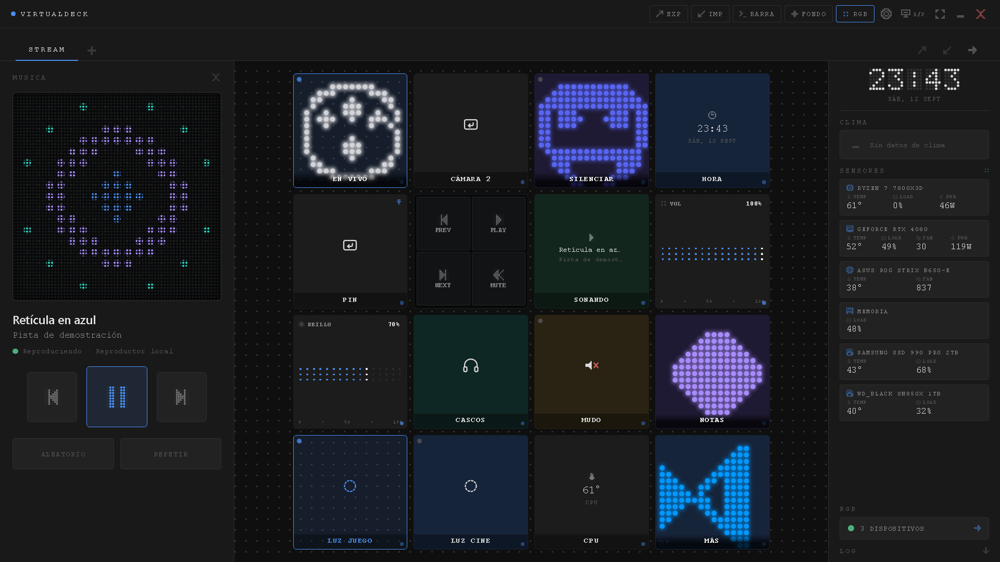

Tu Stream Deck en cualquier pantalla. Controla música, audio, atajos, macros, programas y luces RGB con una cuadrícula interactiva. Sin comprar hardware.
Your Stream Deck on any screen. Control music, audio devices, hotkeys, macros, apps and RGB lighting from an interactive grid. No extra hardware needed.
Para Windows 10 y 11 · Sin cuentas · Código abierto
For Windows 10 & 11 · No accounts · Open Source
Diseñado para responder al instante en cualquier monitor
Engineered for instantaneous control across any display

Potencia sin dependencias ni suscripciones
Full power without subscriptions or external dependencies
Abre programas, carpetas y páginas web. Conmuta salidas de audio en un clic, dispara atajos globales, scripts de PowerShell y webhooks REST.
Launch apps, folders and websites. Switch audio outputs in one click, trigger global hotkeys, PowerShell scripts and REST webhooks.
Monitorea en tiempo real temperaturas de CPU/GPU, carga y memoria con LibreHardwareMonitor sin software propietario invasivo.
Monitor CPU/GPU temperatures, workloads and RAM in real time through LibreHardwareMonitor with zero bloated proprietary software.
Sincroniza tus periféricos y placas base con 18 presets preconfigurados o selector de color manual sin consumir CPU.
Sync your peripherals and motherboards with 18 fine-tuned presets or custom color pickers without consuming CPU cycles.
Controla tu PC desde el navegador de tu teléfono o tableta mediante el servidor local integrado con emparejamiento por código seguro.
Control your PC from your smartphone or tablet browser via the built-in local server with secure one-time pairing codes.
Mantén tus controles y macros más usados siempre a la mano en una tira esbelta y translúcida sobre tus juegos o programas de diseño.
Keep your favorite controls and macros always within reach in a slim, translucent strip hovering over your games or design tools.
Toda tu configuración reside en un archivo JSON en tu ordenador. Sin telemetría, sin rastreadores y sin requerir cuentas de usuario.
All configurations reside strictly in a local JSON file on your machine. No telemetry, no tracking, and zero user account requirements.
Requisitos técnicos del sistema
System requirements
| Sistema Operativo | Operating System | Windows 10 o Windows 11 (64 bits, x64) | Windows 10 or Windows 11 (64-bit, x64) |
| Espacio en disco | Storage | Aprox. 250 MB (núcleo en Rust de alta eficiencia) | Approx. 250 MB (high-efficiency Rust native core) |
| Hardware adicional | Additional Hardware | Ninguno obligatorio. Compatible con cualquier pantalla táctil, tableta o ratón. | None required. Fully compatible with any touchscreen, tablet or standard mouse. |
| Telemetría | Telemetry | 0%. No se recopila ni se transmite ningún dato a servidores externos. | 0%. Absolutely no telemetry or user data is collected or sent to external servers. |
| Distribución | Distribution | Microsoft Store (paquete oficial MSIX verificado y certificado por Microsoft) y código abierto en GitHub. | Microsoft Store (official MSIX package verified & certified by Microsoft) and open source on GitHub. |